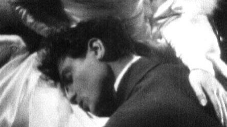

This is the Man page.

Reiko finally decides that she doesn't want to stand in the way of the sister's plans anymore and return home to her family.
Kōji follows her onto the long train ride.
On the way, she softens and they disembark for a country inn, where they can talk.
He resumes his approaches, but at the last minute, she can't face intimacy.
He storms out and gets drunk, later calling Reiko up saying that he is going back home.
In the morning, Reiko sees him being carried into the village on a stretcher, and learns that he died falling from a cliff.
She runs after the carriers, but then stops, her face blank.
Bact to Home